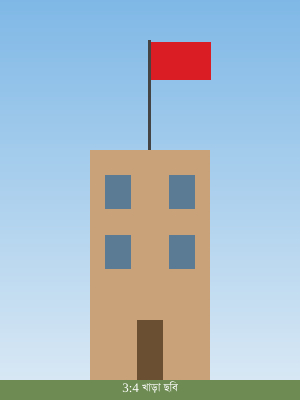

অ্যাডমিন ৩:৪ (খাড়া) ছবি আপলোড করলেন, কিন্তু কার্ডের বাক্স ১৬:৯ (চওড়া)। নিচে চারটি পদ্ধতি, একই ছবি দিয়ে। প্রথম তিনটি আজকের অবস্থা, চতুর্থটি আপনার চাওয়া "ফিলার সিস্টেম"।
object-fit: cover — বাক্স ভরে, কিন্তু ছবির অংশবিশেষ কেটে বাদ পড়ে।

রিপোর্টার যেটুকু দেখাতে চেয়েছিলেন, সেটুকুই হারায়। মুখ কাটা পড়লে ছবিটি অর্থহীন।
এটি সমস্যা নয় — মাপ মিললে cover নিখুঁত।
contain করলে সাদা ফাঁকা বারপুরো ছবি দেখা যায়, কিন্তু দুই পাশে মৃত সাদা বার — দেখতে ভাঙা লাগে।
ছবি বাঁচে, কিন্তু ফাঁকা বার "লোড হয়নি" বা "ভাঙা" মনে হয়।
ভরা অংশে একই ছবির ঝাপসা সংস্করণ বসে, উপরে পুরো ছবি অটুট থাকে। এটিই ইউটিউব, স্পটিফাই ও অ্যাপল টিভি যেভাবে করে।
ছবি অটুট, ফাঁকা নেই, চোখে ভাঙা লাগে না। ফাঁকা বার দেখানোর বদলে ছবিটিই বাক্সটি ধারণ করে।
ঝাপসা স্তর এখানেই সবচেয়ে বেশি কাজে লাগে।
ঝাপসা ছবির বদলে ফাঁকা অংশে সোজা ব্র্যান্ড রঙ। আরও পরিষ্কার ও হালকা, কিন্তু ছবির সঙ্গে মেলে না।
স্পষ্ট ও ব্র্যান্ড-সচেতন, কিন্তু ছবি ও ফাঁকের মাঝে কড়া দাগ দেখা যায়।